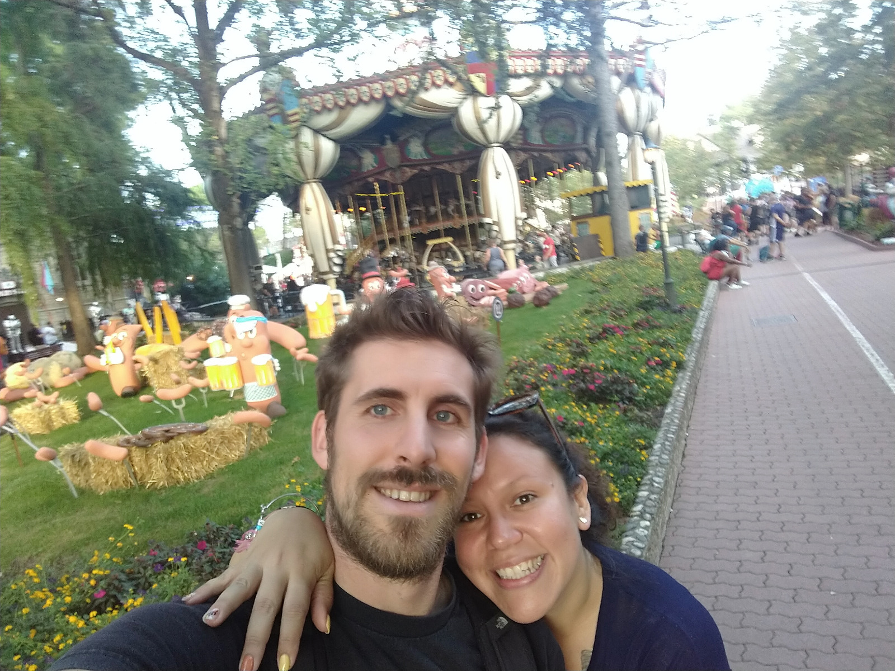
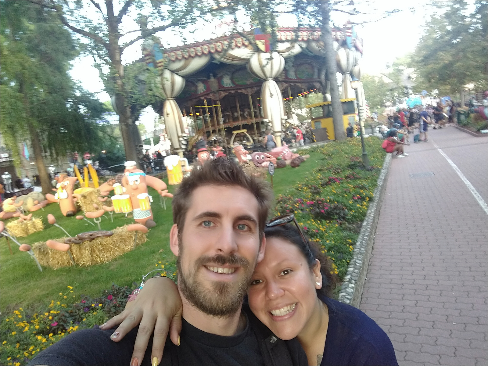

La Nostra Storia
La nostra storia (in breve con tappe importanti ma tanti momenti buffi) Chi l'avrebbe mai detto che quell'incontro casuale ad un evento universitario di Dicembre ‘12 sarebbe stato il primo passo di un fantastico viaggio insieme? Indaffarati com’eravamo tra lezioni, esami universitari, feste, volontariato e lavoro, trovammo pure il tempo di conoscerci e piacerci. Tuttavia, presi com’eravamo da mille impegni e vari soggiorni all'estero, avevamo pure iniziato a misurare la nostra storia tra tempo lordo passato insieme… ed effettivo trascorso almeno nello stesso Paese. Correva l'anno 2018 e finalmente, terminati tutti gli studi, decidiamo di mettere “la testa a posto” (o almeno così credevamo) e andare a convivere. E vissero felici e contenti? Non proprio, e non subito!! Neanche il tempo di disfare le valigie che iniziano a fioccare opportunità.. dalle trasferte in giro per il mondo (più o meno lunghe) al lasciare la bella e ventosa Trieste per avventurarsi verso territori sconosciuti come il Polesine, riprendere gli studi, e ricollocarsi a Treviso prima e Falzè poi.. Senza dimenticare gli innumerevoli ed immancabili viaggi, le onnipresenti partite di pallavolo, le corse podistiche a tutte le ore ed in qualunque luogo, i festival ed i concerti per sentirsi sempre giovani inside… Ed ecco il colpo di scena (aka: La Proposta) Dopo tanti anni passati insieme, alcuni in Paesi diversi ma almeno altrettanti condivisi sotto il medesimo tetto, era il momento di rendere ufficiale il tutto. Tra deadline, sogni e desideri, finalmente la proposta si è materializzata… anche se non proprio come era stata pianificata (maggiori dettagli seguiranno durante l'evento) Però insomma… ci sposiamo!! Ora arriva la parte più importante: vogliamo che siate con noi per il grande giorno! Perché senza di voi, la nostra famiglia, i nostri amici, le persone che ci fanno ridere, piangere e arrabbiare, non sarebbe lo stesso. Ovviamente, dopo la cerimonia, vi aspettiamo per festeggiare come si deve: buon cibo, musica, balli e tanto divertimento. E sì, ci saranno anche momenti imbarazzanti da immortalare per i social (ma niente video durante i brindisi, siamo seri).
Dettagli del Matrimonio
La cerimonia si terrà il 20 luglio 2024 presso la Chiesa di San Marco alle ore 15:00, seguita da un ricevimento presso Villa Serena alle ore 18:00. Non vediamo l'ora di festeggiare con voi!
RSVP
Per favore, confermate la vostra presenza entro il 1 luglio 2024. Potete contattarci via email a olymar.nicola@example.com o tramite telefono al 123-456-7890.
Galleria Fotografica
Scoprite alcuni dei momenti più belli che abbiamo condiviso insieme:


 
